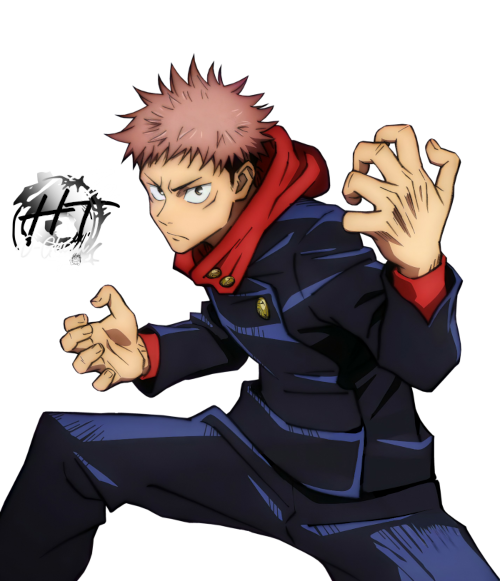

Itadori Yuji é um personagem central na série de mangá e anime "Jujutsu Kaisen". Abaixo, apresento uma biografia resumida de Itadori Yuji:
Nome Completo:
ITADORI YUJI

Origens e Background:
Itadori Yuji é um adolescente comum que vive no Japão. Sua vida muda drasticamente quando ele entra em contato com um objeto amaldiçoado poderoso chamado "Sukuna's Finger".
Apesar de sua natureza amaldiçoada, Yuji demonstra uma incrível força física e determinação.
Papel na Série:
Yuji se torna o hospedeiro de Sukuna Ryoumen, um dos seres amaldiçoados mais perigosos do mundo.
Ele é recrutado para a Escola de Jujutsu de Tóquio, onde se junta a outros jujutsu sorcerers na luta contra maldições e ameaças sobrenaturais.
Yuji é conhecido por sua coragem e forte senso de justiça.
Confrontos Notáveis:
Ao longo da série, Itadori Yuji enfrenta várias ameaças amaldiçoadas e participa de batalhas emocionantes.
Sua luta para controlar a presença de Sukuna dentro de si é uma parte central de sua jornada.
Impacto e Legado:
Itadori Yuji passa por um crescimento significativo ao longo da série, desenvolvendo suas habilidades como jujutsu sorcerer e sua compreensão do mundo das maldições.
Ele se torna uma parte fundamental da equipe de combate contra as maldições e busca desvendar os mistérios que cercam Sukuna.
Vale ressaltar que a série "Jujutsu Kaisen" estava em andamento na época da minha última atualização em setembro de 2021, e mais informações sobre o personagem e sua história podem ter sido reveladas desde então.
Portanto, recomendo verificar fontes atualizadas para obter informações mais recentes sobre Itadori Yuji e seu papel na série.